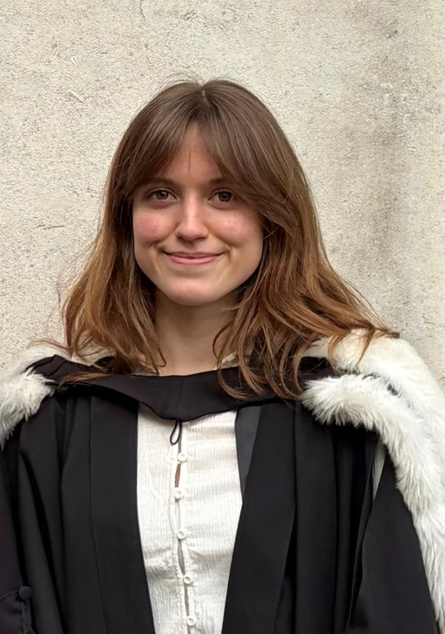

Fran Hardyman
PhD student – Translational Neuroscience
I'm a PhD student with Dr Adil Khan and Dr Joel Winston at the Institute of Psychiatry, Psychology, and Neuroscience, King's College London.
I use intracranial electrophysiology to study the neural basis of cognition in mice and humans, alongside applying AI to seizure prediction for epilepsy patients. I'm interested in neurotech, drug development, and science and health policy.
Before my PhD I read Medicine at Emmanuel College, Cambridge, graduating with a first-class BA.
Blog
-
09/2026
Publications
-
2026
-
2024